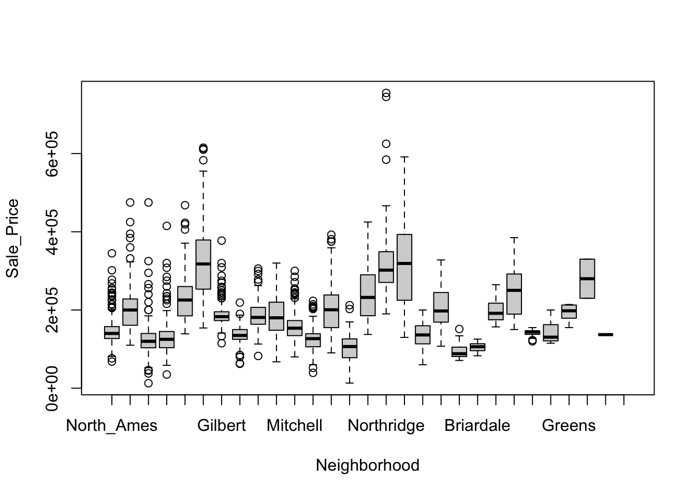
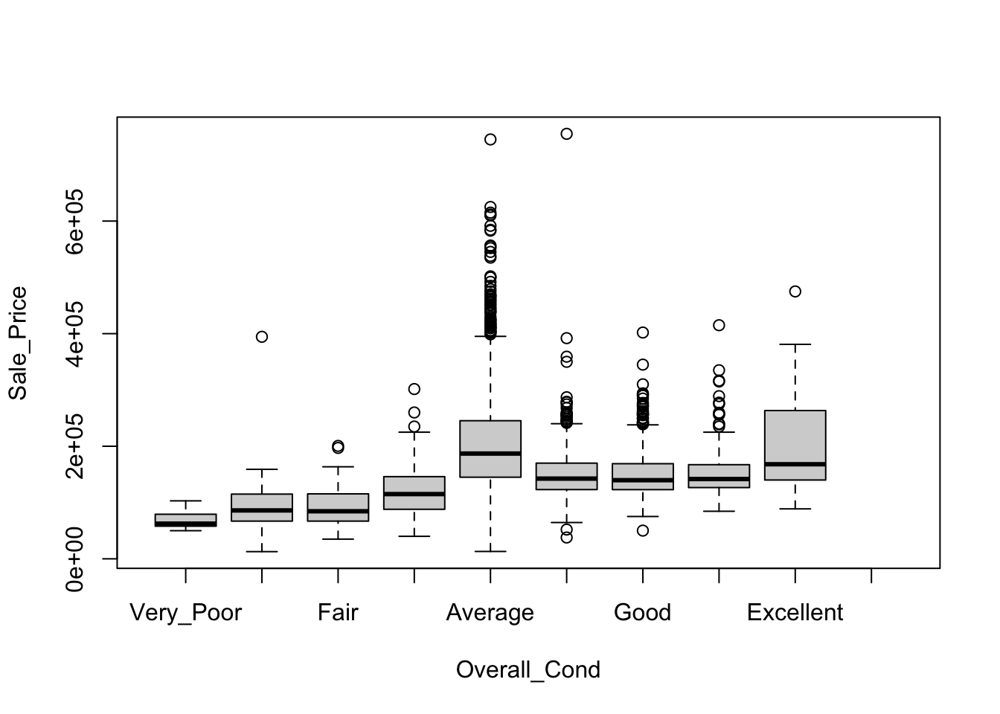
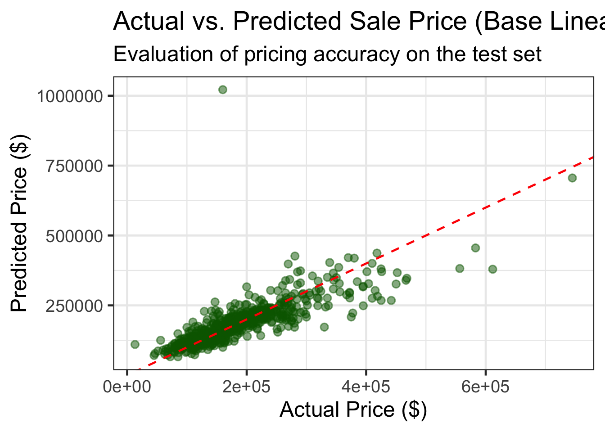

dat <- modeldata::amesAms housing: Sale Price Prediction
AMS HOUSING: SALE PRICE PREDICTION
1. Pricing Decision Context
The purpose of this project is to support a pre-listing pricing decision for residential properties using historical transaction data from Ames, Iowa.
Specifically, the analysis aims to answer the following decision question:
Given the characteristics of a house, which factors have the strongest impact on sale price? What is a reasonable market price, and how confident can we be in that estimate?
This decision framework reflects a real-world scenario in which pricing must be determined before a property is listed, using limited but structured information.
2. Exploratory Data Analysis
Data Source
This analysis uses the Ames Housing dataset, which contains detailed records of residential property sales, including structural characteristics, quality assessments, and location information.
The dataset is treated as a proxy for market knowledge available at the time of pricing.
The data dictionary can be found on the internet
Packages
# check if 'librarian' is installed and if not, install it
if (! "librarian" %in% rownames(installed.packages()) ){
install.packages("librarian")
}
# load packages if not already loaded
librarian::shelf(
tidyverse, magrittr, tidymodels, modeldata, ranger, rsample, broom, recipes, parsnip, ggplot2, psych)
The 'cran_repo' argument in shelf() was not set, so it will use
cran_repo = 'https://cran.r-project.org' by default.
To avoid this message, set the 'cran_repo' argument to a CRAN
mirror URL (see https://cran.r-project.org/mirrors.html) or set
'quiet = TRUE'.# set the efault theme for plotting
theme_set(theme_bw(base_size = 18) + theme(legend.position = "top"))Data Summary
skimr::skim(dat)| Name | dat |
| Number of rows | 2930 |
| Number of columns | 74 |
| _______________________ | |
| Column type frequency: | |
| factor | 40 |
| numeric | 34 |
| ________________________ | |
| Group variables | None |
Variable type: factor
| skim_variable | n_missing | complete_rate | ordered | n_unique | top_counts |
|---|---|---|---|---|---|
| MS_SubClass | 0 | 1 | FALSE | 16 | One: 1079, Two: 575, One: 287, One: 192 |
| MS_Zoning | 0 | 1 | FALSE | 7 | Res: 2273, Res: 462, Flo: 139, Res: 27 |
| Street | 0 | 1 | FALSE | 2 | Pav: 2918, Grv: 12 |
| Alley | 0 | 1 | FALSE | 3 | No_: 2732, Gra: 120, Pav: 78 |
| Lot_Shape | 0 | 1 | FALSE | 4 | Reg: 1859, Sli: 979, Mod: 76, Irr: 16 |
| Land_Contour | 0 | 1 | FALSE | 4 | Lvl: 2633, HLS: 120, Bnk: 117, Low: 60 |
| Utilities | 0 | 1 | FALSE | 3 | All: 2927, NoS: 2, NoS: 1 |
| Lot_Config | 0 | 1 | FALSE | 5 | Ins: 2140, Cor: 511, Cul: 180, FR2: 85 |
| Land_Slope | 0 | 1 | FALSE | 3 | Gtl: 2789, Mod: 125, Sev: 16 |
| Neighborhood | 0 | 1 | FALSE | 28 | Nor: 443, Col: 267, Old: 239, Edw: 194 |
| Condition_1 | 0 | 1 | FALSE | 9 | Nor: 2522, Fee: 164, Art: 92, RRA: 50 |
| Condition_2 | 0 | 1 | FALSE | 8 | Nor: 2900, Fee: 13, Art: 5, Pos: 4 |
| Bldg_Type | 0 | 1 | FALSE | 5 | One: 2425, Twn: 233, Dup: 109, Twn: 101 |
| House_Style | 0 | 1 | FALSE | 8 | One: 1481, Two: 873, One: 314, SLv: 128 |
| Overall_Cond | 0 | 1 | FALSE | 9 | Ave: 1654, Abo: 533, Goo: 390, Ver: 144 |
| Roof_Style | 0 | 1 | FALSE | 6 | Gab: 2321, Hip: 551, Gam: 22, Fla: 20 |
| Roof_Matl | 0 | 1 | FALSE | 8 | Com: 2887, Tar: 23, WdS: 9, WdS: 7 |
| Exterior_1st | 0 | 1 | FALSE | 16 | Vin: 1026, Met: 450, HdB: 442, Wd : 420 |
| Exterior_2nd | 0 | 1 | FALSE | 17 | Vin: 1015, Met: 447, HdB: 406, Wd : 397 |
| Mas_Vnr_Type | 0 | 1 | FALSE | 5 | Non: 1775, Brk: 880, Sto: 249, Brk: 25 |
| Exter_Cond | 0 | 1 | FALSE | 5 | Typ: 2549, Goo: 299, Fai: 67, Exc: 12 |
| Foundation | 0 | 1 | FALSE | 6 | PCo: 1310, CBl: 1244, Brk: 311, Sla: 49 |
| Bsmt_Cond | 0 | 1 | FALSE | 6 | Typ: 2616, Goo: 122, Fai: 104, No_: 80 |
| Bsmt_Exposure | 0 | 1 | FALSE | 5 | No: 1906, Av: 418, Gd: 284, Mn: 239 |
| BsmtFin_Type_1 | 0 | 1 | FALSE | 7 | GLQ: 859, Unf: 851, ALQ: 429, Rec: 288 |
| BsmtFin_Type_2 | 0 | 1 | FALSE | 7 | Unf: 2499, Rec: 106, LwQ: 89, No_: 81 |
| Heating | 0 | 1 | FALSE | 6 | Gas: 2885, Gas: 27, Gra: 9, Wal: 6 |
| Heating_QC | 0 | 1 | FALSE | 5 | Exc: 1495, Typ: 864, Goo: 476, Fai: 92 |
| Central_Air | 0 | 1 | FALSE | 2 | Y: 2734, N: 196 |
| Electrical | 0 | 1 | FALSE | 6 | SBr: 2682, Fus: 188, Fus: 50, Fus: 8 |
| Functional | 0 | 1 | FALSE | 8 | Typ: 2728, Min: 70, Min: 65, Mod: 35 |
| Garage_Type | 0 | 1 | FALSE | 7 | Att: 1731, Det: 782, Bui: 186, No_: 157 |
| Garage_Finish | 0 | 1 | FALSE | 4 | Unf: 1231, RFn: 812, Fin: 728, No_: 159 |
| Garage_Cond | 0 | 1 | FALSE | 6 | Typ: 2665, No_: 159, Fai: 74, Goo: 15 |
| Paved_Drive | 0 | 1 | FALSE | 3 | Pav: 2652, Dir: 216, Par: 62 |
| Pool_QC | 0 | 1 | FALSE | 5 | No_: 2917, Exc: 4, Goo: 4, Typ: 3 |
| Fence | 0 | 1 | FALSE | 5 | No_: 2358, Min: 330, Goo: 118, Goo: 112 |
| Misc_Feature | 0 | 1 | FALSE | 6 | Non: 2824, She: 95, Gar: 5, Oth: 4 |
| Sale_Type | 0 | 1 | FALSE | 10 | WD : 2536, New: 239, COD: 87, Con: 26 |
| Sale_Condition | 0 | 1 | FALSE | 6 | Nor: 2413, Par: 245, Abn: 190, Fam: 46 |
Variable type: numeric
| skim_variable | n_missing | complete_rate | mean | sd | p0 | p25 | p50 | p75 | p100 | hist |
|---|---|---|---|---|---|---|---|---|---|---|
| Lot_Frontage | 0 | 1 | 57.65 | 33.50 | 0.00 | 43.00 | 63.00 | 78.00 | 313.00 | ▇▇▁▁▁ |
| Lot_Area | 0 | 1 | 10147.92 | 7880.02 | 1300.00 | 7440.25 | 9436.50 | 11555.25 | 215245.00 | ▇▁▁▁▁ |
| Year_Built | 0 | 1 | 1971.36 | 30.25 | 1872.00 | 1954.00 | 1973.00 | 2001.00 | 2010.00 | ▁▂▃▆▇ |
| Year_Remod_Add | 0 | 1 | 1984.27 | 20.86 | 1950.00 | 1965.00 | 1993.00 | 2004.00 | 2010.00 | ▅▂▂▃▇ |
| Mas_Vnr_Area | 0 | 1 | 101.10 | 178.63 | 0.00 | 0.00 | 0.00 | 162.75 | 1600.00 | ▇▁▁▁▁ |
| BsmtFin_SF_1 | 0 | 1 | 4.18 | 2.23 | 0.00 | 3.00 | 3.00 | 7.00 | 7.00 | ▃▂▇▁▇ |
| BsmtFin_SF_2 | 0 | 1 | 49.71 | 169.14 | 0.00 | 0.00 | 0.00 | 0.00 | 1526.00 | ▇▁▁▁▁ |
| Bsmt_Unf_SF | 0 | 1 | 559.07 | 439.54 | 0.00 | 219.00 | 465.50 | 801.75 | 2336.00 | ▇▅▂▁▁ |
| Total_Bsmt_SF | 0 | 1 | 1051.26 | 440.97 | 0.00 | 793.00 | 990.00 | 1301.50 | 6110.00 | ▇▃▁▁▁ |
| First_Flr_SF | 0 | 1 | 1159.56 | 391.89 | 334.00 | 876.25 | 1084.00 | 1384.00 | 5095.00 | ▇▃▁▁▁ |
| Second_Flr_SF | 0 | 1 | 335.46 | 428.40 | 0.00 | 0.00 | 0.00 | 703.75 | 2065.00 | ▇▃▂▁▁ |
| Gr_Liv_Area | 0 | 1 | 1499.69 | 505.51 | 334.00 | 1126.00 | 1442.00 | 1742.75 | 5642.00 | ▇▇▁▁▁ |
| Bsmt_Full_Bath | 0 | 1 | 0.43 | 0.52 | 0.00 | 0.00 | 0.00 | 1.00 | 3.00 | ▇▆▁▁▁ |
| Bsmt_Half_Bath | 0 | 1 | 0.06 | 0.25 | 0.00 | 0.00 | 0.00 | 0.00 | 2.00 | ▇▁▁▁▁ |
| Full_Bath | 0 | 1 | 1.57 | 0.55 | 0.00 | 1.00 | 2.00 | 2.00 | 4.00 | ▁▇▇▁▁ |
| Half_Bath | 0 | 1 | 0.38 | 0.50 | 0.00 | 0.00 | 0.00 | 1.00 | 2.00 | ▇▁▅▁▁ |
| Bedroom_AbvGr | 0 | 1 | 2.85 | 0.83 | 0.00 | 2.00 | 3.00 | 3.00 | 8.00 | ▁▇▂▁▁ |
| Kitchen_AbvGr | 0 | 1 | 1.04 | 0.21 | 0.00 | 1.00 | 1.00 | 1.00 | 3.00 | ▁▇▁▁▁ |
| TotRms_AbvGrd | 0 | 1 | 6.44 | 1.57 | 2.00 | 5.00 | 6.00 | 7.00 | 15.00 | ▁▇▂▁▁ |
| Fireplaces | 0 | 1 | 0.60 | 0.65 | 0.00 | 0.00 | 1.00 | 1.00 | 4.00 | ▇▇▁▁▁ |
| Garage_Cars | 0 | 1 | 1.77 | 0.76 | 0.00 | 1.00 | 2.00 | 2.00 | 5.00 | ▅▇▂▁▁ |
| Garage_Area | 0 | 1 | 472.66 | 215.19 | 0.00 | 320.00 | 480.00 | 576.00 | 1488.00 | ▃▇▃▁▁ |
| Wood_Deck_SF | 0 | 1 | 93.75 | 126.36 | 0.00 | 0.00 | 0.00 | 168.00 | 1424.00 | ▇▁▁▁▁ |
| Open_Porch_SF | 0 | 1 | 47.53 | 67.48 | 0.00 | 0.00 | 27.00 | 70.00 | 742.00 | ▇▁▁▁▁ |
| Enclosed_Porch | 0 | 1 | 23.01 | 64.14 | 0.00 | 0.00 | 0.00 | 0.00 | 1012.00 | ▇▁▁▁▁ |
| Three_season_porch | 0 | 1 | 2.59 | 25.14 | 0.00 | 0.00 | 0.00 | 0.00 | 508.00 | ▇▁▁▁▁ |
| Screen_Porch | 0 | 1 | 16.00 | 56.09 | 0.00 | 0.00 | 0.00 | 0.00 | 576.00 | ▇▁▁▁▁ |
| Pool_Area | 0 | 1 | 2.24 | 35.60 | 0.00 | 0.00 | 0.00 | 0.00 | 800.00 | ▇▁▁▁▁ |
| Misc_Val | 0 | 1 | 50.64 | 566.34 | 0.00 | 0.00 | 0.00 | 0.00 | 17000.00 | ▇▁▁▁▁ |
| Mo_Sold | 0 | 1 | 6.22 | 2.71 | 1.00 | 4.00 | 6.00 | 8.00 | 12.00 | ▅▆▇▃▃ |
| Year_Sold | 0 | 1 | 2007.79 | 1.32 | 2006.00 | 2007.00 | 2008.00 | 2009.00 | 2010.00 | ▇▇▇▇▃ |
| Sale_Price | 0 | 1 | 180796.06 | 79886.69 | 12789.00 | 129500.00 | 160000.00 | 213500.00 | 755000.00 | ▇▇▁▁▁ |
| Longitude | 0 | 1 | -93.64 | 0.03 | -93.69 | -93.66 | -93.64 | -93.62 | -93.58 | ▅▅▇▆▁ |
| Latitude | 0 | 1 | 42.03 | 0.02 | 41.99 | 42.02 | 42.03 | 42.05 | 42.06 | ▂▂▇▇▇ |
There are 2930 observations and 74 variables. Variable types: 40 categorical variables, 34 numeric variables. There is no missing data. We can group the variables as follow:
Location: Neighborhood, MS_Zoning, Street, Alley, Lot_Config, Land_Contour, Lot_Shape, Land_Slope, Condition_1, Condition_2
Size: Lot_Frontage Lot_Area, Gr_Liv_Area, First_Flr_SF, Second_Flr_SF, Low_Qual_Fin_SF, Total_Bsmt_SF, BsmtFin_SF_1, BsmtFin_SF_2, Bsmt_Unf_SF, Garage_Area, Mas_Vnr_Area
Quality/Condition: Overall_Cond, Exter_Qual, Exter_Cond Bsmt_Qual, Bsmt_Cond, Heating_QC, Kitchen_Qual, Fireplace_Qu, Garage_Qual, Garage_Cond, Pool_QC
Age: Year_Built, Year_Remod_Add, Garage_Yr_Blt
Amenities: Bedroom_AbvGr, Kitchen_AbvGr, TotRms_AbvGrd, Full_Bath, Half_Bath, Bsmt_Full_Bath, Bsmt_Half_Bath, Fireplaces, Garage_Cars, Garage_Type, Garage_Finish, Fence, Misc_Feature, Misc_Val
To reduce redundancy and multicollinearity, the analysis focuses on key feature groups and selects representative variables from each group to use as predictors.
Understanding the Response Variable
ggplot(data = dat, aes(x = Sale_Price)) + geom_histogram(bins = 30) + labs(title = "Histogram of Sale Price", x = "Sale Price", y ="Count")
Insight:
The majority of homes sell at moderate prices, while a small number of high-end properties drive a long right tail:
Peak around $120k–$200k
Prices extend up to $700k+
Because the distribution is not symmetric, modeling sale price on the original scale may violate model assumptions. Therefore, a log transformation of Sale_Price is applied during the modeling stage to improve stability and predictive performance.
Numeric Feature Exploration
num_vars <- ames |> select(where(is.numeric)) |> names()
num_corr <- sapply(num_vars, function(v) {
cor(ames[[v]], ames$Sale_Price, use = "complete.obs")
})
sort(abs(num_corr), decreasing = TRUE) Sale_Price Gr_Liv_Area Garage_Cars Garage_Area
1.000000000 0.706779921 0.647561613 0.640138298
Total_Bsmt_SF First_Flr_SF Year_Built Full_Bath
0.632528849 0.621676063 0.558426106 0.545603901
Year_Remod_Add Mas_Vnr_Area TotRms_AbvGrd Fireplaces
0.532973754 0.502195977 0.495474417 0.474558093
Wood_Deck_SF Open_Porch_SF Latitude Half_Bath
0.327143174 0.312950506 0.290891384 0.285056032
Bsmt_Full_Bath Second_Flr_SF Lot_Area Longitude
0.275822661 0.269373357 0.266549220 0.251397253
Lot_Frontage Bsmt_Unf_SF Bedroom_AbvGr BsmtFin_SF_1
0.201874510 0.183307587 0.143913428 0.134905479
Enclosed_Porch Kitchen_AbvGr Screen_Porch Pool_Area
0.128787442 0.119813720 0.112151214 0.068403247
Bsmt_Half_Bath Mo_Sold Three_season_porch Year_Sold
0.035816609 0.035258842 0.032224649 0.030569087
Misc_Val BsmtFin_SF_2
0.015691463 0.006017568 cor(dat$Gr_Liv_Area, dat$Total_Bsmt_SF)[1] 0.4451076cor(dat$Gr_Liv_Area, dat$First_Flr_SF)[1] 0.5621658Strong predictors (|r| ≥ 0.6)
Gr_Liv_Area: Strongest size-related driver
Garage_Cars: Garage capacity strongly affects price
Garage_Area: Similar to Garage_Cars → redundant
Total_Bsmt_SF: Basement size strongly affects price but can be overlap with Gr_Liv_Area
First_Flr_SF: Overlap with Gr_Liv_Are -> redundant
Year_Built: New home can be sold at higher price
Numerical Variable selection for each data group:
Size Group: Gr_Liv_Area
Amenities Group: Garage_Cars
Age group: Year_Built
Categorical Data Exploration
cat_vars <- ames |> select(where(is.factor)) |> names()
cat_vars [1] "MS_SubClass" "MS_Zoning" "Street" "Alley"
[5] "Lot_Shape" "Land_Contour" "Utilities" "Lot_Config"
[9] "Land_Slope" "Neighborhood" "Condition_1" "Condition_2"
[13] "Bldg_Type" "House_Style" "Overall_Cond" "Roof_Style"
[17] "Roof_Matl" "Exterior_1st" "Exterior_2nd" "Mas_Vnr_Type"
[21] "Exter_Cond" "Foundation" "Bsmt_Cond" "Bsmt_Exposure"
[25] "BsmtFin_Type_1" "BsmtFin_Type_2" "Heating" "Heating_QC"
[29] "Central_Air" "Electrical" "Functional" "Garage_Type"
[33] "Garage_Finish" "Garage_Cond" "Paved_Drive" "Pool_QC"
[37] "Fence" "Misc_Feature" "Sale_Type" "Sale_Condition"summary(aov(Sale_Price ~ Neighborhood, data = ames)) Df Sum Sq Mean Sq F value Pr(>F)
Neighborhood 27 1.072e+13 3.969e+11 144.4 <2e-16 ***
Residuals 2902 7.977e+12 2.749e+09
---
Signif. codes: 0 '***' 0.001 '**' 0.01 '*' 0.05 '.' 0.1 ' ' 1summary(aov(Sale_Price ~ Overall_Cond, data = ames)) Df Sum Sq Mean Sq F value Pr(>F)
Overall_Cond 8 2.809e+12 3.511e+11 64.58 <2e-16 ***
Residuals 2921 1.588e+13 5.438e+09
---
Signif. codes: 0 '***' 0.001 '**' 0.01 '*' 0.05 '.' 0.1 ' ' 1boxplot(Sale_Price ~ Neighborhood, data = dat)
boxplot(Sale_Price ~ Overall_Cond, data = dat)
The ANOVA results and box plots show that sale prices vary significantly across neighborhoods and levels of overall condition.
This suggests that Neighborhood is an appropriate representative variable for location effects, while Overall_Cond effectively captures differences in housing quality.
Final Predictor Selection
Based on the exploratory analysis, the following variables are identified as the key drivers of housing prices:
Location: Neighborhood
Size: Gr_Liv_Area
Quality: Overall_Cond
Amenities: Garage_Cars
Age: Year_Built
3. Modeling Strategy and Evaluation
Modeling Objective
The objective of modeling is to estimate housing prices before listing, using information that would realistically be available at that time.
The modeling approach prioritizes:
Out-of-sample predictive performance
Interpretability of price drivers
Stability across neighborhoods
Rather than maximizing accuracy alone, models are evaluated based on how well they support pricing decisions.
Evaluation Strategy
To assess model performance, the data is split into training and testing sets. Cross-validation is used within the training set to reduce variance in performance estimates.
The primary evaluation metric is Root Mean Squared Error (RMSE), as it penalizes large pricing errors and is interpretable in currency units.
Data Splitting and Normalization
#Split train/test data
set.seed(8740)
data_split <- initial_split(dat, strata = "Sale_Price", prop = 0.75)
ames_train <- rsample::training(data_split)
ames_test <- rsample::testing(data_split)
formula <- Sale_Price~Neighborhood + Gr_Liv_Area + Overall_Cond + Garage_Cars + Year_Built
norm_recipe <-
recipes::recipe(formula, data = ames_train) %>%
recipes::step_center(recipes::all_numeric_predictors()) %>%
recipes::step_scale(recipes::all_numeric_predictors()) %>%
recipes::step_log(all_outcomes(), base = exp(1)) %>%
recipes::step_other(Neighborhood) %>%
recipes::step_dummy(recipes::all_nominal_predictors())Create models
Create three regression models
a base regression model using
lma regression model using
glmnet; set the model parameterspenaltyandmixturefor tuninga tree model using the
rangerengine; set the model parametersmin_nandtreesfor tuning# Specify the model lm_mod_base <- parsnip::linear_reg() %>% parsnip::set_mode("regression") %>% parsnip::set_engine("lm") lm_mod_glmnet <- parsnip::linear_reg(penalty = tune(), mixture = tune()) %>% parsnip::set_mode("regression") %>% parsnip::set_engine("glmnet") lm_mod_rforest <- parsnip::rand_forest(min_n = tune(),trees = tune()) %>% parsnip::set_mode("regression") %>% parsnip::set_engine("ranger")
Create bootstrap samples for the training dataset to ensure that all models are evaluated on the same resamples.
set.seed(8740)
train_resamples <- rsample::bootstraps(ames_train)Model Assessment
Create workflows to ensure preprocessing is applied inside each resample and a workflow set was used to systematically compare linear, regularized, and tree-based regression models under identical resampling conditions.
all_workflows <- workflowsets::workflow_set(preproc = list(base=norm_recipe), models = list(base = lm_mod_base, glmnet = lm_mod_glmnet, forest = lm_mod_rforest))# unnest the info column of all_workflows to show the workflow structure
all_workflows %>% tidyr::unnest(info)# A tibble: 3 × 7
wflow_id workflow preproc model comment option result
<chr> <list> <chr> <chr> <chr> <list> <list>
1 base_base <workflow> recipe linear_reg "" <opts[0]> <list [0]>
2 base_glmnet <workflow> recipe linear_reg "" <opts[0]> <list [0]>
3 base_forest <workflow> recipe rand_forest "" <opts[0]> <list [0]>Tune all the workflow. This will take some time to complete.
all_workflows <- all_workflows %>%
workflowsets::workflow_map(
verbose = TRUE # enable logging
, resamples = train_resamples # a parameter passed to tune::tune_grid()
, grid = 5 # a parameter passed to tune::tune_grid()
)i No tuning parameters. `fit_resamples()` will be attemptedi 1 of 3 resampling: base_base→ A | warning: prediction from rank-deficient fit; consider predict(., rankdeficient="NA")There were issues with some computations A: x1There were issues with some computations A: x19There were issues with some computations A: x25✔ 1 of 3 resampling: base_base (2s)i 2 of 3 tuning: base_glmnet→ A | warning: A correlation computation is required, but `estimate` is constant and has 0
standard deviation, resulting in a divide by 0 error. `NA` will be returned.There were issues with some computations A: x16There were issues with some computations A: x25✔ 2 of 3 tuning: base_glmnet (3.9s)i 3 of 3 tuning: base_forest✔ 3 of 3 tuning: base_forest (1m 9.2s)Get the ‘rmse’ result metric for each model
all_workflows %>%
dplyr::select(wflow_id,result) %>%
tidyr::unnest(result) %>%
tidyr::unnest(.metrics) %>%
dplyr::filter(.metric == 'rmse') %>%
dplyr::group_by(wflow_id) %>%
dplyr::arrange(desc(.estimate) ) %>%
dplyr::slice(1)# A tibble: 3 × 12
# Groups: wflow_id [3]
wflow_id splits id .metric .estimator .estimate .config penalty
<chr> <list> <chr> <chr> <chr> <dbl> <chr> <dbl>
1 base_ba… <split [2197/798]> Boot… rmse standard 0.200 pre0_m… NA
2 base_fo… <split [2197/799]> Boot… rmse standard 0.291 pre0_m… NA
3 base_gl… <split [2197/805]> Boot… rmse standard 0.431 pre0_m… 1
# ℹ 4 more variables: mixture <dbl>, trees <int>, min_n <int>, .notes <list>Define the best model.
workflowsets::rank_results(all_workflows, rank_metric = "rmse", select_best = TRUE)# A tibble: 6 × 9
wflow_id .config .metric mean std_err n preprocessor model rank
<chr> <chr> <chr> <dbl> <dbl> <int> <chr> <chr> <int>
1 base_base pre0_mod0_po… rmse 0.184 0.00154 25 recipe line… 1
2 base_base pre0_mod0_po… rsq 0.793 0.00315 25 recipe line… 1
3 base_glmnet pre0_mod1_po… rmse 0.184 0.00154 25 recipe line… 2
4 base_glmnet pre0_mod1_po… rsq 0.793 0.00316 25 recipe line… 2
5 base_forest pre0_mod3_po… rmse 0.184 0.00221 25 recipe rand… 3
6 base_forest pre0_mod3_po… rsq 0.803 0.00283 25 recipe rand… 3Based on RMSE, the linear regression model achieved the lowest prediction error among the candidate models.
Although the random forest model achieved a slightly higher R², its RMSE was marginally worse. Since RMSE directly reflects pricing error in monetary terms, minimizing RMSE was prioritized. In addition, the linear model offers greater interpretability, which is important for explaining pricing decisions.
Therefore, the linear regression model was selected as the final model.
Model Selection for Prediction
best_model_workflow <-
all_workflows %>%
workflowsets::extract_workflow("base_base")Finalize the workflow by setting the parameters for the best model
best_model_workflow <- best_model_workflow %>% tune::finalize_workflow(
tibble::tibble(trees = 1, min_n = 11) # the name and value of the best-fit parameters from tuning process
)
best_model_workflow══ Workflow ════════════════════════════════════════════════════════════════════
Preprocessor: Recipe
Model: linear_reg()
── Preprocessor ────────────────────────────────────────────────────────────────
5 Recipe Steps
• step_center()
• step_scale()
• step_log()
• step_other()
• step_dummy()
── Model ───────────────────────────────────────────────────────────────────────
Linear Regression Model Specification (regression)
Computational engine: lm 4. Final Model Fitting and Prediction
# Fit with the train set and predict on test set
best_fit_results <- best_model_workflow %>%
tune::last_fit(split = data_split)→ A | warning: prediction from rank-deficient fit; consider predict(., rankdeficient="NA")There were issues with some computations A: x1
There were issues with some computations A: x1# Get RMSE and R-squared for the test set
test_metrics <- best_fit_results %>% tune::collect_metrics()
print("Base Linear Model Metrics:")[1] "Base Linear Model Metrics:"print(test_metrics)# A tibble: 2 × 4
.metric .estimator .estimate .config
<chr> <chr> <dbl> <chr>
1 rmse standard 0.213 pre0_mod0_post0
2 rsq standard 0.731 pre0_mod0_post0# Compare Predicted vs. True Sale Price
# Reverse the log transformation for interpretability
test_predictions <- best_fit_results %>%
tune::collect_predictions() %>%
mutate(
.pred_actual = exp(.pred),
Sale_Price_actual = exp(Sale_Price)
)
ggplot(test_predictions, aes(x = Sale_Price_actual, y = .pred_actual)) +
geom_point(alpha = 0.5, color = "darkgreen") +
geom_abline(slope = 1, intercept = 0, color = "red", linetype = "dashed") +
labs(
title = "Actual vs. Predicted Sale Price (Base Linear Model)",
subtitle = "Evaluation of pricing accuracy on the test set",
x = "Actual Price ($)",
y = "Predicted Price ($)"
)
The actual versus predicted price plot shows that the model performs well for the majority of homes, particularly in the mid-price range where most transactions occur. Predictions closely follow the 45-degree reference line, indicating good calibration.
The model tends to underpredict very high-priced properties, which may be due to the absence of detailed luxury features in the selected predictors. Overall, the model demonstrates reasonable predictive performance and is suitable for supporting pre-listing pricing decisions.
5. Conclusion
This project demonstrates how historical housing data can be used to support pre-listing pricing decisions. Exploratory analysis identified key price drivers related to location, size, quality, amenities, and age.
Multiple models were evaluated using a consistent resampling framework, and a linear regression model was selected based on its balance of predictive accuracy and interpretability. The final model provides reliable price estimates and can support practical pricing decisions in a real-world setting.